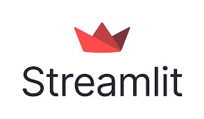

As a Clinical Data Scientist with a background in biological sciences, I’ve evolved from a statistician using tools like SPSS, EPI INFO, and STATA to a data professional proficient in SQL, Python, and R, leveraging them to extract valuable insights from data. Along this journey, I’ve also developed expertise in Generative AI and AI agent design, using these advanced technologies to automate clinical workflows, enhance decision-making, and support research innovation. My diverse experiences have shaped a dynamic learning and growth path.
Key strengths include:
I build and deploy AI agents and agentic AI architectures to tackle complex clinical problems and improve healthcare outcomes.
Proficient in Python and SQL for data manipulation, analysis, and modeling, with intermediate proficiency in R.
Deep understanding of machine learning and deep learning algorithms.
Skilled in using pre-trained models and APIs from Hugging Face, OpenAI, and DeepSeek for building intelligent clinical applications.
Proficient in prompt engineering and fine-tuning techniques to control LLM behavior for domain-specific outputs
Use domain-specific LLMs like Med-PaLM, BioMedLM, ClinicalBERT, PubMedGPT, for clinical NLP and biomedical text understanding
Experienced with Google Cloud Platform tools
Knowledge of HIPAA/GDPR compliance, data de-identification, and ethical AI practices in healthcare.


This project was developed to leverage a logistic regression algorithm to predict mortality risk in heart failure patients. By analyzing patient data and identifying key predictors, the model aims to provide insights into survival rates, helping healthcare providers make informed decisions and prioritize interventions for high-risk patients.
The objective of this task is to clean the data, remove rows with incomplete information, and perform basic exploratory data analysis
This current projects is designed to derive and compare the customer review insights of Beat by Dre speakers in comparison to other nine speakers of same price ranges. This insight will includes reviews and feedback retrieved from Amazon to providing valuable comparisons and customer perspectives
This project features an interactive AI-powered chatbot designed to answer questions about the Human Metapneumovirus (hMPV). Leveraging the capabilities of LLM and retrieval-augmented generation (RAG), the chatbot provides accurate, up-to-date, and context-aware responses

I built an interactive Streamlit web interface to showcase my data science services and project offerings. The application features a clean, user-friendly layout and integrates dynamic content to highlight my expertise in clinical data analysis, machine learning, and generative AI. It serves as a professional touchpoint for potential collaborators and clients to explore my work.
This contains data analysis presentations highlights, including tables and chart The content demonstrates proficiency in descriptive and inferential data analysis and result interpretation.
I have co-authored publications in peer-reviewed journals, contributing to advancements in clinical research and data-driven healthcare insights. Please find the publications